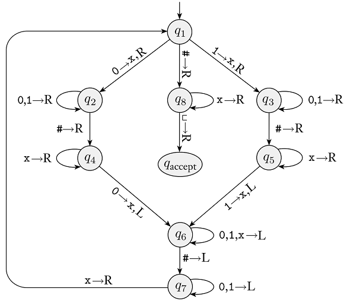

Homework 7
Last updated: Sun, 28 Apr 2024 10:30:03 -0400
Out: Mon Apr 01, 12:00pm EST (noon) Due: Mon Apr 08, 12:00pm EST (noon)
This assignment begins to lookg at Turing Machines (TMs).
Homework Problems
Computing String Equality With a PDA? (12 points)
Turing Machine Computation (12 points)
A Turing-Recognizable Language (12 points)
A Closed Operation For Turing-Recognizable Languages (12 points)
README (2 point)
Total: 50 points
Submitting
Submit your solution to this assignment in Gradescope hw7. Please assign each page to the correct problem and make sure your solutions are legible.
A submission must also include a README containing the required information.
1 Computing String Equality With a PDA?
A common operation when programming is to compare two strings to see if they are equal, e.g., in Python the == operator performs this task.
As a language, this computation might be represented as:
\textrm{EQ}_\textsf{str} = \left\{\ell_1\texttt{==}\ell_2\mid \ell_1,\ell_2\textrm{ are the same string}\right\}
Prove that this operation cannot be computed by a PDA.
Assume that alphabet of the language is \Sigma=\left\{\texttt{a},\ldots,\texttt{z},\texttt{=}\right\} (i.e., all the lowercase letters and the equal symbol).
2 Turing Machine Computation
Here is a Turing Machine state diagram from class (Figure 3.10 in the Sipser Textbook):

Remember that from each state, there are implicit transitions to an implicit q_{reject} state, for any alphabet characters that are not explicitly shown. You may assume that transitions that go to q_{reject} do not change the tape contents and move the head to the right. Also, if a transition does not have a "write" character, then the tape contents stay the same (i.e., it "writes" the same character that was there).
Using this machine, answer the following questions (if your answer includes TM configurations, they must be the textual representation of a configuration).
What is the start configuration of this machine for an input string with characters \texttt{1110000}?
Give two concrete strings accepted by this TM. Then, for each of these strings, give a sequence of configurations that starts in the start configuration and ends in a configuration containing q_{accept}. The two sequences of configurations that you submit must together use every (shown) transition in the machine. Make sure that the head is pointing at the correct character at each step.
Give two concrete strings rejected by this TM. Then, for each of these strings, give a sequence of configurations that starts in the start configuration and ends in a configuration containing q_{reject}.
When a Turing Machine is given an input string and begins computation on that string, what are the possible results of the computation?
3 A Turing-Recognizable Language
In Homework 5 we showed that the \mathit{WS} language is not a regular language.
Now prove that this language is a Turing-recognizable language.
Your proof must of course be in the form of a Statements and Justifications table.
Any Turing Machine you create should be a high-level description. In addition, the criteria to show that a Turing machine recognizes some language is to give three example strings that are both accepted by the machine and in the language, and three examples that are both not accepted by the machine and not in the language.
4 A Closed Operation For Turing-Recognizable Languages
In Homework 2 we proved that the \mathrm{ADD0} operation is closed for regular languages. Now prove that \mathrm{ADD0} is closed for Turing-recognizable languages by answering the following:
Give the If-Then statement that would have to be proved.
Prove it by giving a table of Statements and Justifications, where the last statement is the If-Then statement to be proved from above.
If your answer involves constructing a TM that calls (an)other TM(s), create a table of possible TM outcomes, like the ones from lecture, that show all possible combinations of results from all of the Turing machines involved in your answer. (You may use "Any" in a table cell if it would be convenient to combine some rows.)
- Briefly discuss:
which rows of your table describe the accepting cases for the constructed TM
which rows of your table result infinite loops (if any), and why this is acceptable